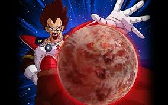
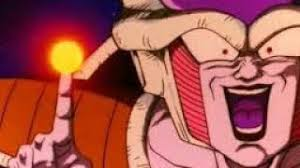
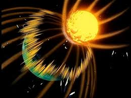
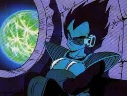
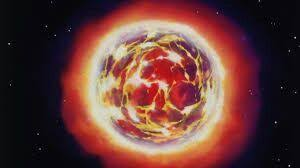
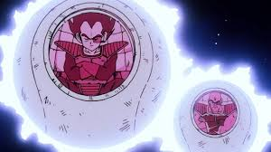
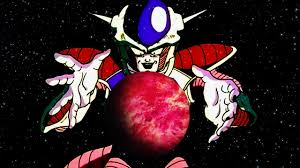

Planeta Vegeta
Planeta Vegeta: O Lar dos Sayajins
O Planeta Vegeta é o lar da raça guerreira Sayajin, conhecida por sua força, habilidades de combate e a capacidade de se transformar em Oozaru (um grande macaco) durante a lua cheia. O planeta é caracterizado por sua paisagem árida e sua cultura focada em batalhas e conquistas.

Os Sayajins eram inicialmente uma raça de guerreiros ferozes, mas sua história também é marcada por conflitos internos e rivalidades. Vegeta, o príncipe dos Sayajins, e Nappa, seu fiel companheiro, são dois dos mais poderosos guerreiros dessa raça. Os Sayajins costumavam conquistar outros planetas, aumentando seu poder e influência.
A Chegada de Freeza
A paz no Planeta Vegeta é rompida com a chegada de Freeza, um poderoso tirano que vê os Sayajins como uma ameaça. Temendo seu crescimento, Freeza decide eliminar os Sayajins e, por consequência, destruir o planeta. Ele já havia exterminado outros planetas e se tornou conhecido por sua crueldade e ambição de poder.
O Ataque de Freeza

Em um ato de traição, Freeza lança um ataque devastador no Planeta Vegeta. Ele utiliza a técnica chamada "Supernova", que explode o planeta em uma brilhante e cataclísmica explosão. A destruição é rápida e total, levando à extinção da raça Sayajin.

A Fuga de um Guerreiro
Antes da destruição, Vegeta e Nappa conseguem escapar em uma nave espacial.

Então seu planeta natal é totalmente extinto pelo poder do grande Freeza

Vegeta, como príncipe, busca vingar seu planeta e seu povo, enquanto Nappa se junta a ele na nova jornada. Essa fuga marca o início de novas aventuras para os Sayajins sobreviventes e a continuação da saga de Dragon Ball Z.

..Qual será o proximo destino de Freeza, na sua saga de conquistar planetas?
